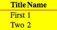

5. Предложите стили для установки красного фона у всех кнопок, кроме крайних (первой и последней):
6. Предложите стили для таблицы ниже, чтобы привести её к виду, как на скриншоте
Скриншот:

Реализация:
Title
Name
First
1
Two
2
7. Сверстайте кнопку. Пожалуйста, учитывайте, что эта кнопка должна быть кнопкой-на-все-случаи-жизни. Сделайте несколько примеров кнопки в различном окружении и различном html-представлении.